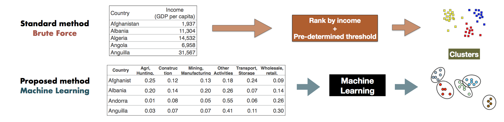

Beyond Income: A New Structural Classification of the World
February 28, 2017
Filed under Data Science

(image taken from my github, whole presentation is available here.)
For as long as I remember, international institutions like the World Bank and the IMF have grouped countries either by income, or by region, in policy analysis. These groups help multilaterals find eligible country comparators in recommending policy to other member nations.
That is to say that poor countries are in a different group to the emerging, and advanced economies. Hence, you can't compare China (an emerging economy) with Spain (an advanced economy). Meanwhile, another form of grouping is by region: Asian economies are grouped in one cluster, while Europe is another. This has been the way that policymaking has been set-up since the 1970s, and it has barely changed.
However, this type of grouping is subject to a lot of political and methodological issues. Identifying the threshold that separates high, middle, and low is usually a subject of intense debate and contention . There have been a number of studies that suggest that their threshold is better than the standard. Case in point: the World Bank , the IMF , and the UN do not even agree on what threshold to use! (So it is always best to define if you are using the IMF definition, the UN, or the World Bank definition when doing analysis on these income groups.)
The goal of this exercise
My goal with this exercise is to validate these (arguably outdated) income groups, determine an objective method, and perhaps suggest an alternative means of classification. My main argument is that these income groups warrant a fresh perspective. Given the developments in the world today, geopolitically, economically, and technologically, we ought to think about whether these country groups are still relevant, or is it an outdated view of the world.
This was my topic for my capstone at General Assembly's data science course. I thought I'd investigate the income groups using the more objective and modern method of machine learning.
The model
The schematic of my model, compared with the current, is shown below. The traditional way of clustering countries was to rank all countries by income, then set a threshold to define high-middle-low to build the clusters. My proposed method, using unsupervised machine learning, was to take an alternative dataset that has more dimensions to a country other than income. Then, I plug it into the "black box" of machine learning to discover the clusters. In the ideal case, the results of the new model would converge with the old.
Because I promised a jargon-free blog, I will skip all the technicalities, but you may view all the details on the models tested and the dataset on my github. To summarize, I tried two popular clustering methods, K-Means and Hierarchical, and I ran the cluster analysis for every decade during the period 1970-2015.
The results
My results showed some promise. I was able to (consistently) find three clusters in 1970, 1980, 1990, and 2000, and a slight divergence in 2010 (6 clusters for K-Means, 3 clusters for Hierarchical).
Clustering Results:
K-Means Hierarchical
1970s 3 3
1980s 3 3
1990s 3 3
2000s 3 3
2010s 6 3
To me, the results suggests that three clusters are perhaps income groups (High/ Middle/ Low) and six clusters may indicate regional groups. I verified my results and compared them with income, via simple Pearson correlation.
Correlation of Clusters with Income
1970s: 0.699225355443
1980s: 0.6530658344
1990s: 0.628873055818
2000s: 0.544806898754
2010s: (K-Means) 0.016198906498
2010s: (Hierarchical) 0.367918615678
Correlation of Clusters with Region (Africa, Europe, Americas, Asia, etc.)
2010s: (K-Means) 0.082789964173
Correlation of Clusters with different sectors of the economy.
2010 ISICAB: (K-Means) 0.161243735252
2010 ISICF: (K-Means) 0.20600142179
2010 ISICCE: (K-Means) 0.255586347709
2010 ISICJP: (K-Means) 0.341363230757
2010 ISICI: (K-Means) 0.505339423178
2010 ISICGH: (K-Means) 0.0693089160196
The results above can be summarized into three main points.
From 70% correlation in the 1970s, you can see that there is hardly any link between clusters and income after the global financial crisis (2010 onwards). Hence, the relationship between income and clusters have declined over time.
On the finding of 6 clusters in 2010, there seems to be no link between the clusters and regional groups either.
Upon further investigation, wherein I compared the correlated the clusters with different sectors of the economy, I found that there seems to be a link between clusters and "ISIC I," which is transportation and ICT networks. This may suggest that, country groups may be based more on their interconnectivity with others, rather than based on their level of income.
In summary
As a researcher in a multilateral institution, I find this result powerful. For one, we have been classifying countries using outdated groups. This could probably mean that we have been using the wrong comparators in doing country case studies! This can have a huge implication in the operational work of multilateral institutions today. In a nutshell,
We ought to consider that income or regional groupings may not be representative of how countries cluster today.
By looking more deeply into a country's economic structure, we may be able to find more aspects in common among countries other than their level of income. And this could enrich our policy making and analysis going forward. So tell me again, why are we still classifying the world by income?
Reference
Python code is available on my github page.